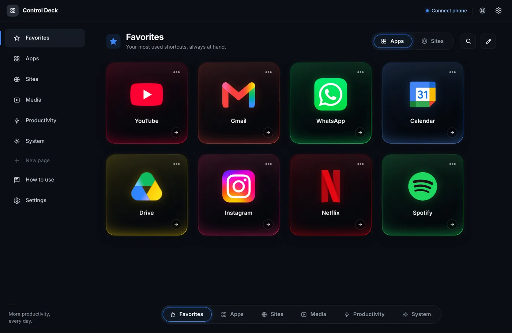
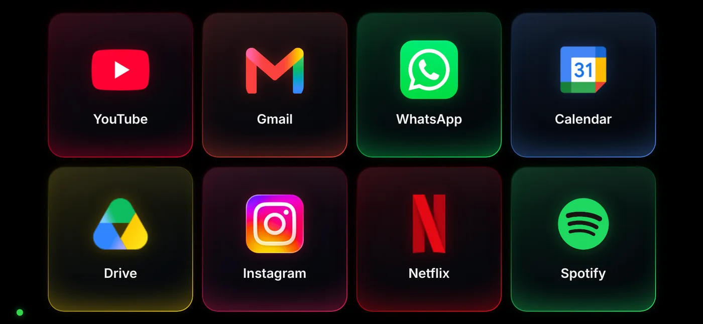
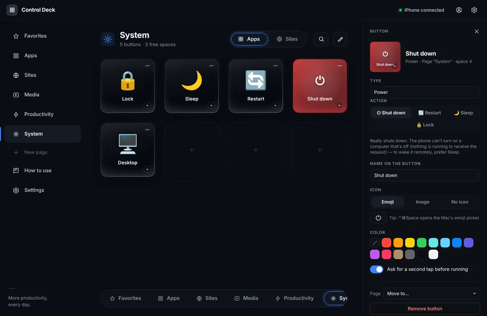
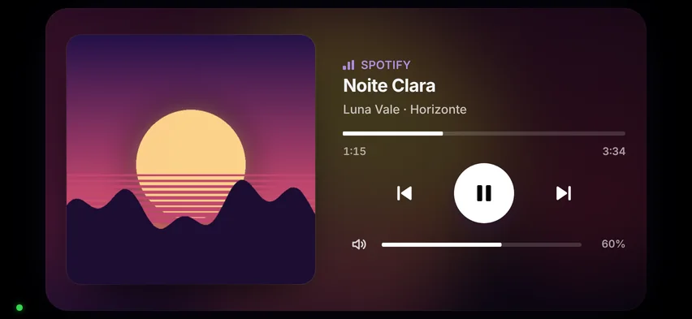
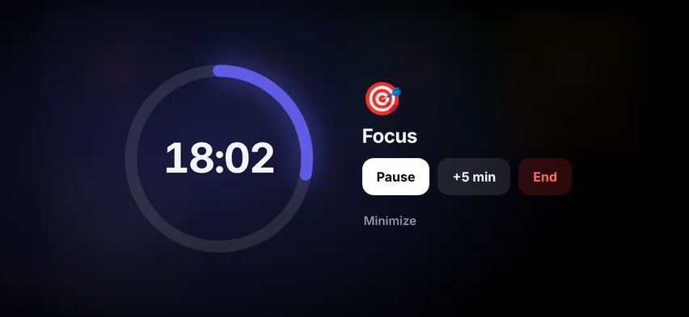
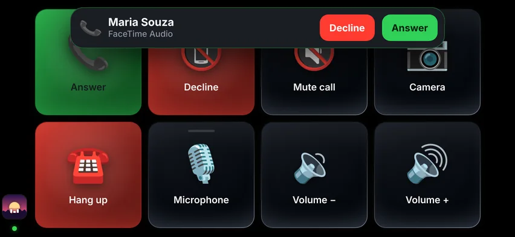
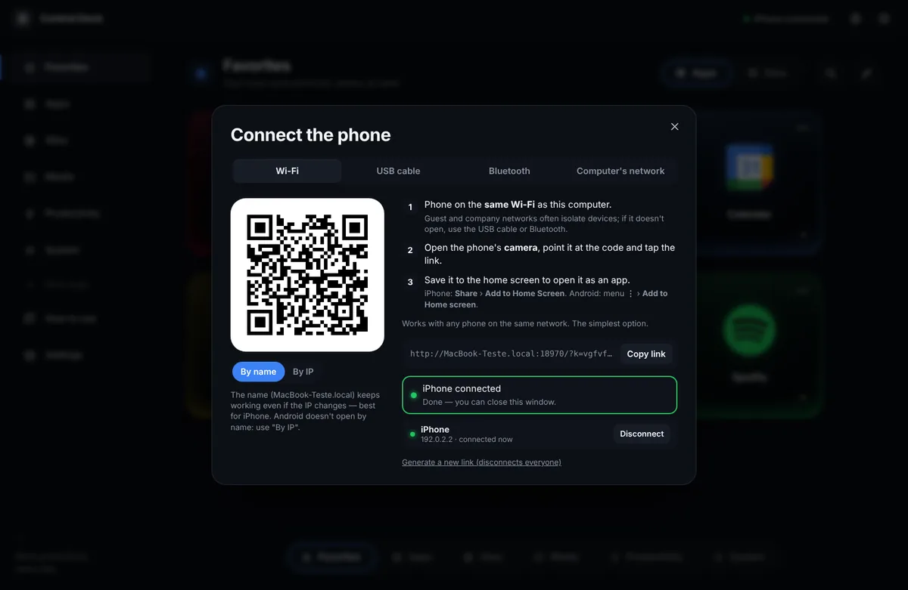
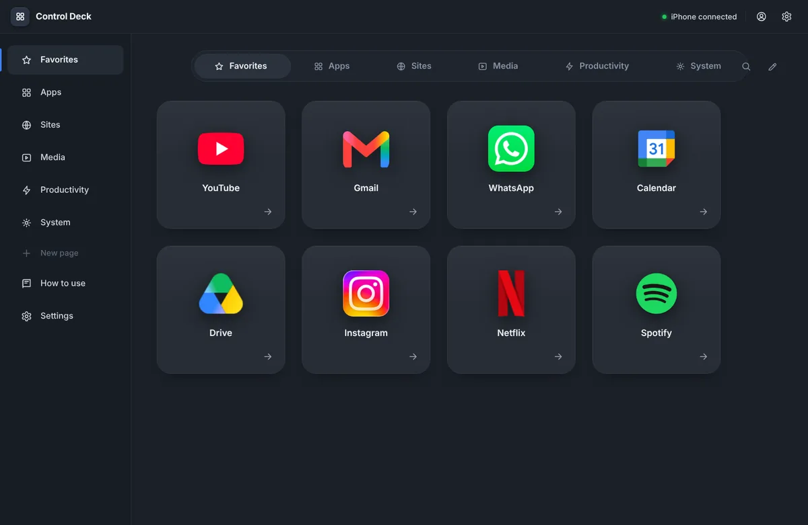

Your phone becomes a button panel for your computer.
Open apps and sites, press shortcuts, control the music that's playing, start a focus mode, mute the call, lock or shut down the computer — with one tap, on your phone's screen. Nothing installed in the system: it's a folder, one click and a QR code.
Version 3.2 · 270 KB · for Mac, Windows and Linux
There's nothing to download on the phone. Deck runs on the computer; the phone just scans the QR code shown there and becomes an app on the home screen.
Open this page on the computer to download it — or send the link to yourself:


How it works
Three steps. The computer runs a small program; the phone opens a page that becomes an app on the home screen.
Start it on the computer
Paste one line in the Terminal (Mac and Linux) or unzip the folder and double-click (Windows). The editor opens in the browser.
Scan with the phone
Point the camera at the QR code and save it to the home screen. Over Wi-Fi, USB cable or Bluetooth.
Build the buttons
Pick apps, sites and shortcuts in the editor. The phone mirrors it instantly, with the real icons.
What the buttons do
Each button is an action on the computer. Icons come by themselves: the app's as installed, the site's official one.

The System page, with the power buttons and the edit panel open.
DJ, focus and calls
The phone also shows what's playing, keeps you focused and takes care of calls.

DJ
What's playing on the computer — Spotify, Music, YouTube, any player — with artwork or the video's thumbnail, time and controls. On the other pages, a mini player sits in the corner.

Modes
Focus, Work, Study: one tap turns on Do Not Disturb, opens and closes apps, sets the volume and puts a big timer on the screen. Another tap undoes it.

Calls
Mute, camera and leave in Zoom, Teams, Meet and others, without hunting for the window. On a Mac, FaceTime and iPhone calls show up on the phone to answer.
Download Deck
Version 3.2 · 270 KB. Nothing is installed in the system: Deck is a folder. To uninstall, delete the folder.
With the Terminal recommended · no security warning
Open Terminal (⌘ + space, type Terminal), paste the line below and press Enter. It downloads Deck into a Deck folder in your home folder and starts it.
Next time, just double-click Iniciar no Mac.command inside the folder ("Iniciar" means Start). If the Mac asks for the "command line developer tools", accept and run the line again. To update Deck, run the same line: your buttons stay.
Or download the zip
Download deck.zip, unzip it and double-click Iniciar no Mac.command. The first time, macOS blocks it ("Apple could not verify…"): click Done, open System Settings › Privacy & Security, scroll to the bottom and click Open Anyway. Once only. On macOS 14 or earlier, right-click › Open is enough.
With the zip
- Install Python 3 from python.org — in the installer, check Add python.exe to PATH.
- Download deck.zip, right-click it › Extract All.
- Double-click
Iniciar no Windows.bat("Iniciar" means Start). If Windows asks whether you really want to run it, untick Always ask before opening this file and click Run (or More info › Run anyway) — that way it won't ask again. If the Firewall asks, Allow access.
Or with PowerShell
With Python installed, open Terminal (right-click the Start menu › Terminal), paste the line and press Enter. It downloads Deck into a Deck folder in your user folder and starts it; to update, run it again.
With the terminal recommended
Paste the line and press Enter (needs python3, already included in most distros). It downloads Deck into a Deck folder in your home and starts it; to update, run it again.
Or download the zip
Download deck.zip, unzip it and run ./iniciar-linux.sh (or python3 server.py) inside the folder.
Step by step
From download to the first button, on any computer and any phone. The same guide lives inside Deck, under How to use, in the editor's sidebar.
1Download
- Mac and Linux: the easiest way is the Terminal line in the Download section — it creates a
Deckfolder in your home folder, already cleared by the system, and starts the deck. Windows: install Python 3 (python.org, checking Add python.exe to PATH), download deck.zip and extract it into a folder of yours. - Prefer the zip on Mac or Linux? It works too: download it, unzip it into a folder of yours (for example
Documents/Deck) and follow step 2. - The folder has
server.py, thewebfolder and the start files (Iniciar no Mac.command,Iniciar no Windows.bat,iniciar-linux.sh).
2Start it on the computer
| Computer | How to start |
|---|---|
| Mac | Double-click Iniciar no Mac.command. If you installed with the Terminal line, it opens right away. If you downloaded the zip, macOS blocks it the first time ("Apple could not verify…"): click Done, go to System Settings › Privacy & Security, scroll to the bottom and click Open Anyway — once only. On macOS 14 or earlier, right-click › Open. |
| Windows | Double-click Iniciar no Windows.bat. If Windows asks whether you really want to run it, untick Always ask before opening this file and click Run (or More info › Run anyway) — that way it won't ask again. If the Firewall asks, Allow access (private networks). |
| Linux | In the folder, run ./iniciar-linux.sh (or python3 server.py). |
A terminal window opens with the deck's address and then the editor opens in the browser (http://localhost:8787/editar). Keep the terminal window open while you use it: it's the one running the deck. To turn it off, close the window or press Ctrl+C in it.
Permissions (first time only)
- Mac: for buttons that press keys, macOS asks for Accessibility (System Settings › Privacy & Security › Accessibility › turn on Terminal). To see the browser's open tabs, it asks for Automation. If the Mac's Firewall is on, click Allow when it asks about Python.
- Windows: only the Firewall prompt above.
- Linux: on Wayland, keys and text use
wtypeorydotool; on X11,xdotool. The deck tells you in the terminal if one is missing.
3Connect the phone
In the editor, click Connect phone. A QR code appears: open the phone's camera, point it and tap the link. Then save it to the home screen to open it as an app — iPhone: Share › Add to Home Screen; Android: menu ⋮ › Add to Home screen.

Four ways to connect; the deck detects by itself when the phone shows up through each path.
Wi-Fi
Both on the same network. On a Mac the link comes by name (YourMac.local), which doesn't change when the router changes the IP; Android doesn't open by name, so there use By IP.
USB cable
Zero lag and it charges the phone. iPhone: Settings › Personal Hotspot › Allow Others to Join, then plug in the cable. Android: USB tethering (on a Mac, only Android 14+).
Bluetooth
No cable and no router. Personal Hotspot (or Bluetooth tethering) on, pair the two and, on the Mac, Bluetooth menu › phone › Connect to Network.
Computer's network
When there's no Wi-Fi at all. Mac: Internet Sharing over Bluetooth PAN. Windows: Mobile hotspot. Linux: Wi-Fi hotspot.
4Build the buttons
Everything is done in the editor, on the computer; the phone mirrors it instantly. Each page in the sidebar is a screen on the phone (4×2 by default). Click an empty space to create a button, or use ＋ Apps and ＋ Sites at the top.
- AppPick from the list of installed programs — the button gets the app's own icon.
- SiteType an address or pick from open tabs, bookmarks and most visited. It gets the official icon.
- Keyboard shortcutRecord a combination, like ⌘C or Ctrl+Z.
- TextTypes a ready-made phrase wherever the cursor is.
- Media and VolumePlay/pause, skip, up, down, mute.
- MicrophoneMutes and unmutes; the light turns on on the phone.
- PowerShut down, restart, sleep or lock. Asks for a second tap.
- Go to pageJumps to another page on the phone.
- ModeTurns on Do Not Disturb, opens and closes apps, sets the volume and shows a timer.
- CallAnswer, decline, mute, camera and hang up in the meeting app.
Drag the buttons to rearrange and the pages in the sidebar to change their order; the eye next to the name hides the page from the phone without deleting it. Click the card's ··· to edit (name, icon, color, confirmation) and use Settings for the theme, the grid size, the language and the QR code. ⌘Z undoes. Everything is saved automatically to the folder's config.json file, which you can copy to another computer.

Two themes: black, with LEDs on the cards, and normal, more discreet.
5Use it on the phone
- Open it from the home screen icon, in landscape: that's how the 4×2 grid fits.
- Swipe sideways to change pages.
- Tap a button and it runs right away; the card flashes white when it worked and red when it failed (with the explanation). Buttons with confirmation ask for a second tap.
- State buttons (mute, microphone) keep their light on while active.
- The screen doesn't dim while the app is open. On Android, use the full screen button in the corner.
- Changed something in the editor? The phone updates by itself within two seconds.
6DJ, modes and calls
- DJ: the DJ page shows full screen whatever is playing on the computer, with artwork, time, back, play/pause, skip and volume; tap the bar to jump to another point. YouTube videos show up with the video's thumbnail, in full (16:9). Any page can become a player in the editor (Page › Page type › Player).
- Modes: Focus (25 min), Work, Study (50 min), Home and Break come ready. Each one can turn on Do Not Disturb, open apps and sites, close distractions, set the volume, switch page and show a timer. Another tap turns it off.
- Calls: the deck brings the meeting window to the front and presses the app's own shortcut (Zoom, Teams, Meet, Webex, Discord, Slack). With no meeting open, mute silences the computer's microphone.
| Do Not Disturb | How it works |
|---|---|
| Mac | Through the Shortcuts app: create Deck Focus On and Deck Focus Off once, with the Set Focus action › Do Not Disturb › On/Off. |
| Windows | Not possible from a program: the mode does the rest and reminds you on the phone to turn it on with Win+N. |
| Linux | On GNOME, by itself. |
On a Mac, FaceTime and iPhone calls reach the phone with Answer and Decline when the deck has any Call button. The deck reads the Notification Center alert (with the Accessibility permission) — it's experimental and may fail if macOS changes that alert.
7Other devices
| Device | How |
|---|---|
| iPhone / iPad | Camera on the QR code › link › Share › Add to Home Screen. By name or by IP, both work. |
| Samsung / Android | Camera (or the QR app) › link in Chrome › ⋮ › Add to Home screen. Use the By IP link. |
| Tablet | Same as the phone. With more screen, enlarge the grid in Settings (up to 8×8). |
| Another computer | Open the phone's link (Copy link button) in any browser — it becomes a button panel on the second computer. |
| Several at once | Yes: they all use the same link and see the same buttons. In Connect phone you can disconnect one device or generate a new link for everyone. |
8If something goes wrong
- The app opens with a black screen (or "could not connect"): the phone isn't finding the computer at the saved address. Close the app (swipe up) and open it again with the deck on. If it persists, the address changed: open Connect phone — it warns when the computer's IP or name changed and shows the new QR code.
- Doesn't connect over Wi-Fi: guest and company networks isolate devices from each other. Use the USB cable or Bluetooth.
- "Apple could not verify…" when opening
Iniciar no Mac.command: that's the macOS warning for programs that didn't go through Apple. System Settings › Privacy & Security › Open Anyway (once only) — or install with the Terminal line, which has no such warning. - Key button does nothing on the Mac: Terminal is missing the Accessibility permission (step 2).
- Open tabs don't show up on the Mac: Safari/Chrome is missing the Automation permission.
- The mode doesn't turn on Do Not Disturb on the Mac: check the “Deck Focus On” and “Deck Focus Off” shortcuts in the Shortcuts app (step 6).
- The DJ doesn't show what plays in the browser (Mac): some macOS versions hide it from programs; Spotify and Music still show up, and the play, skip and back buttons work the same.
- "The port is already in use": the deck is already open in another window. Close the other one, or start with
--porta 8788. - Lost the phone or want to disconnect everyone: Connect phone › Generate a new link (or start with
--novo-link) and scan again.
Frequently asked questions
Does it need internet?
No. The phone and the computer talk directly over the local network (Wi-Fi, cable or Bluetooth). Nothing goes through any server.
Does it work with Samsung and other Android phones?
Yes — any phone with a browser. On Android use the "By IP" link and the full screen button. For a USB cable with a Mac you need Android 14 or newer; on Windows and Linux it works with any version.
Can I turn the computer on from the phone?
A computer that's off has nothing running to receive the request, so no. Use the Sleep button: the computer wakes with any key and, on a Mac with an Apple TV or HomePod on the network, it wakes by itself when Deck opens on the phone.
Is it safe? Can someone on the same network press my buttons?
Only whoever has the phone link, which carries a secret key — and even then only the buttons you created; the phone never sends free-form commands. The editor only opens on the computer itself. To cut someone off, just generate a new link.
Does it work with Spotify, YouTube and Apple Music?
Yes. The DJ page shows whatever is playing on the computer, in any app or browser tab, with artwork (on YouTube, the video's thumbnail) and controls. On a Mac it uses the same "Now Playing" as Control Center; on Windows, the system media controls; on Linux, playerctl.
Can I answer calls and mute the meeting from the phone?
Yes. The Call buttons mute, toggle the camera and leave Zoom, Teams, Meet, Webex, Discord and Slack. On a Mac, FaceTime and iPhone calls show up on the phone with Answer and Decline (experimental).
How much does it cost?
Nothing. Download, unzip and use it.
Do I need to install anything?
On Mac and Linux, no. On Windows, only Python (official installer, one click). Deck itself is a folder: to uninstall, delete it.
Is it in English?
Yes. The editor, the phone and the guide follow the computer's language (Portuguese or English), and you can switch it in Settings › Language. Only the start files keep their Portuguese names: Iniciar means Start.
The Mac said it "could not verify it is free of malware". Is it a virus?
No — it's macOS's standard warning for any program that didn't go through Apple (signing requires a paid developer account). Deck is a folder of open files: you can read the whole server.py. To allow it: Done › System Settings › Privacy & Security › Open Anyway, once only. Or install with the Terminal line, which doesn't show the warning.
And on Windows, "the publisher could not be verified"?
Same reason: Windows warns about any file downloaded from the internet that isn't signed. Click Run (or More info › Run anyway). To stop it from asking again, untick Always ask before opening this file in that warning — or right-click Iniciar no Windows.bat › Properties › Unblock. The PowerShell line does this by itself.